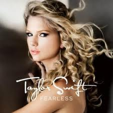

ABOUT TAYLOR SWIFT
Taylor Alison Swift was born December 13, 1989 is an American singer-songwriter and occasional actress.
Raised in Wyomissing, Pennsylvania, Swift moved to Nashville, Tennessee at the age of 14 to pursue a career in country music.
She signed to independent label Big Machine Records and became the youngest songwriter ever hired by the Sony/ATV Music publishing house.
The release of Swift's self-titled debut album in 2006 established her as a country music star.
"Our Song", her third single, made her the youngest sole writer and singer of a number one song on the country chart.
Swift received a Best New Artist nomination at the 50th Grammy Awards.
Swift's second album, Fearless, was released in 2008 and became a crossover commercial success.
The record won four Grammy Awards, with Swift becoming the youngest ever Album of the Year winner.
Fearless also received Album of the Year plaudits at the American Music Awards, Academy of Country Music Awards and Country Music Association Awards, making it the most awarded album in country music history.
In 2010, Swift released her third album, Speak Now, which sold over one million copies in its first week. She then embarked on the 111-date Speak Now World Tour, which was attended by over 1.6 million fans and has become one of the highest-grossing concert tours of all time.
Swift is currently recording her fourth studio album, due for release in the fall of 2012.
Swift's work has earned her numerous accolades, including six Grammy Awards, ten AMAs, seven CMAs, six ACMs and 13 BMI Awards.
She has sold over 22 million albums and 50 million song downloads worldwide, making her one of the best-selling music artists of all time.
Swift has endorsement deals with Target, CoverGirl, Sony, Elizabeth Arden, Walmart and American Greetings. She is considered by Forbes to be one of the wealthiest recording artists working today.
In addition to her music career, Swift has appeared as an actress in the crime drama CSI: Crime Scene Investigation (2009), the romantic comedy Valentine's Day (2010) and the animated film The Lorax (2012).
